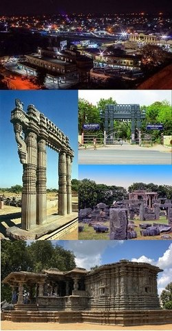

Originally known as Orugallu which means ‘one stone’, Warangal was ruled by the Kakatiya dynasty. It is believed that the entire town was carved out on a single rock. The Kakatiyas built many monuments in the state which include iconic fortresses, gateways and temples. Among the most famous monuments of Telangana, the Thousand Pillar Temple in Hanamkonda, was built by the Kakatiya King Rudra Deva in 1163 AD in Chalukyan style of temple architecture. The city of Warangal was also described in detail by Marco Polo during his visit to the country. The city of Warangal is well connected by road as well as rail. The city is a cluster of three towns and is popular for many attractions. While visiting Warangal, one should definitely stop by the beautiful Khush Mahal located near the Warangal Fort. The symbol of a glorious past, it is a masterpiece built by Shitabh Khan.
Warangal is a city in the south Indian state of Telangana.
It was the capital of the Kakatiya dynasty from the 12th to 14th centuries, and many intricately carved monuments from this period still stand. Among them are the ruins of 13th-century Warangal Fort and the Thousand Pillar Temple, built in 1163. Set on a lake, Bhadrakali Temple dates to the 7th century and is dedicated to the Hindu goddess Kali.
Warangal is the fifth largest city of the state and a very important tourist place with an enchanting architectural work which attracts many people from different parts of the world. The famous tourist places in Warangal are—thousand pillared temple (built by the Kakatiyas and it is dedicated to Lord Shiva, Lord Vishnu and Lord Surya); the Bhadrakali temple (dedicated to Goddess Bhadrakali); Ramappa temple (where Lord Shiva is worshipped). Some other monuments of Warangal include Warangal Fort, a historical monument which dates back to the 13th Century and Ghanpur group of temples.
Recognized as one of the best heritage cities of India, Warangal is situated 145 km away from Hyderabad in Telangana state. The fifth largest city in the state, its name is derived from the word Orugallu: Oru, which means one and Kallu means stone. The city was also known as Ekasila Nagaram.
Warangal was the capital of the Kakatiya kingdom which ruled between 12th and 14th century.